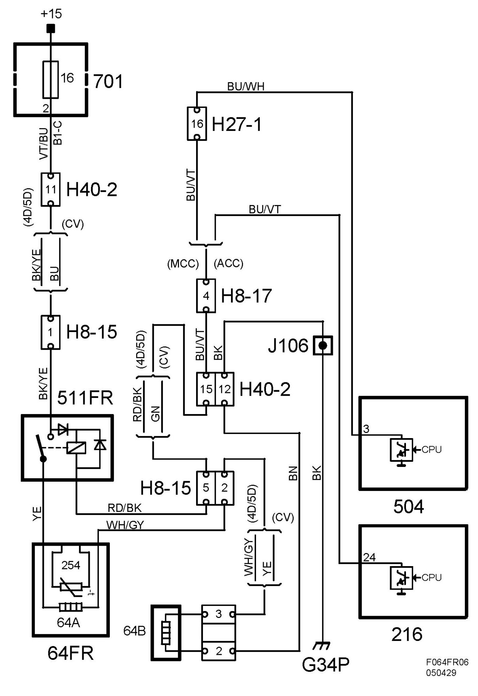

Heated Seat, Right-Hand Front, Inoperative.
Heated Seat, Right-hand Front, Inoperative.

Fault symptom
Heated seat, right-hand front, inoperative.
Conditions
Seat heating activated.
- ACC
No DTCs stored with the fault symptom in question.
Seat heating lower than 20 degrees C.
Outside temperature lower than 15 degrees C.
Diagnostic help
Test value:
Seat Temperature Right
Seat Temperature Sensor Right
Ambient Temperature, Filtered
Seat Heating Right
Activate:
Seat Heating Right
(See also description of readings/activations in diagnostic tool)